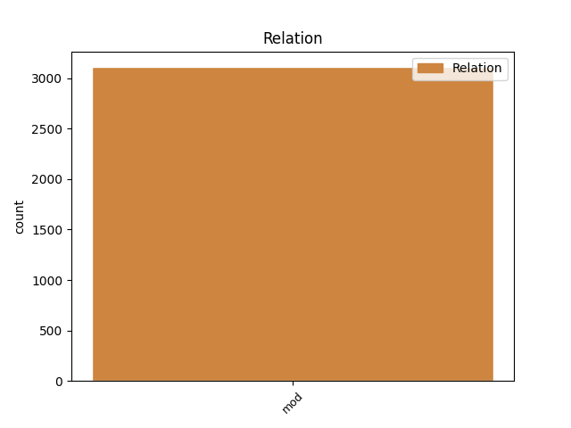
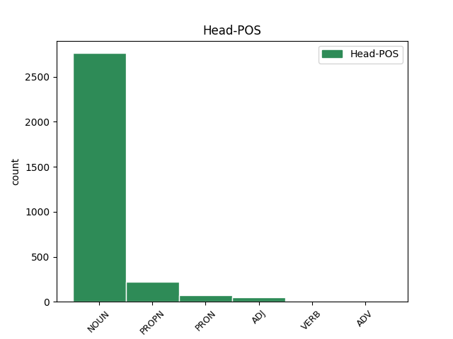
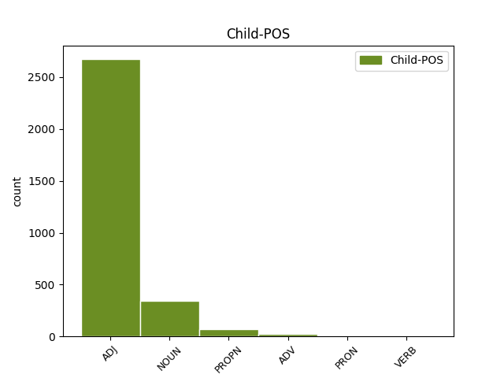

Distribution of features within this leaf



Agreement Rules sorted by frequency.
- When the dependent token is the modifer(mod) of the head token,
1 Han _ _ _ _ 0 _ _ _
2 tänkte _ _ _ _ 0 _ _ _
3 absolut _ _ _ _ 0 _ _ _
4 inte _ _ _ _ 0 _ _ _
5 bedriva _ _ _ _ 0 _ _ _
6 sodomi _ _ _ _ 0 _ _ _
7 med _ _ _ _ 0 _ _ _
8 sin _ _ _ _ 0 _ _ _
9 egen egen ADJ POS-SG-IND Case=Nom|Degree=Pos|Gender=Com|Number=Sing 10 mod _ _
10 hustru hustru NOUN SG-IND-NOM Case=Nom|Definite=Ind|Gender=Com|Number=Sing 0 _ _ _
11 . _ _ _ _ 0 _ _ _
Disagree Examples:
1 4 _ _ _ _ 0 _ _ _
2 Det _ _ _ _ 0 _ _ _
3 inre inre ADJ CMP Case=Nom|Degree=Cmp 4 mod _ _
4 fältets fält NOUN SG-DEF-GEN Case=Gen|Definite=Def|Gender=Neut|Number=Sing 0 _ _ _
5 element _ _ _ _ 0 _ _ _
6 upprepas _ _ _ _ 0 _ _ _
7 för _ _ _ _ 0 _ _ _
8 varje _ _ _ _ 0 _ _ _
9 element _ _ _ _ 0 _ _ _
10 i _ _ _ _ 0 _ _ _
11 det _ _ _ _ 0 _ _ _
12 yttre _ _ _ _ 0 _ _ _
13 fältet _ _ _ _ 0 _ _ _
14 . _ _ _ _ 0 _ _ _
1 3 _ _ _ _ 0 _ _ _
2 När _ _ _ _ 0 _ _ _
3 du _ _ _ _ 0 _ _ _
4 filtrerar _ _ _ _ 0 _ _ _
5 ett _ _ _ _ 0 _ _ _
6 fält _ _ _ _ 0 _ _ _
7 ändras _ _ _ _ 0 _ _ _
8 färgen _ _ _ _ 0 _ _ _
9 på _ _ _ _ 0 _ _ _
10 det _ _ _ _ 0 _ _ _
11 filtrerade filtrera ADJ AD-SG-IND Case=Nom|Definite=Ind|Degree=Pos|Gender=Neut|Number=Sing 12 mod _ _
12 fältets fält NOUN SG-DEF-GEN Case=Gen|Definite=Def|Gender=Neut|Number=Sing 0 _ _ _
13 nedrullningsbara _ _ _ _ 0 _ _ _
14 pil _ _ _ _ 0 _ _ _
15 Fältpil _ _ _ _ 0 _ _ _
16 från _ _ _ _ 0 _ _ _
17 svart _ _ _ _ 0 _ _ _
18 till _ _ _ _ 0 _ _ _
19 blå _ _ _ _ 0 _ _ _
20 , _ _ _ _ 0 _ _ _
21 och _ _ _ _ 0 _ _ _
22 knappen _ _ _ _ 0 _ _ _
23 Autofilter _ _ _ _ 0 _ _ _
24 i _ _ _ _ 0 _ _ _
25 verktygsfältet _ _ _ _ 0 _ _ _
26 markeras _ _ _ _ 0 _ _ _
27 . _ _ _ _ 0 _ _ _
1 Ändra _ _ _ _ 0 _ _ _
2 den _ _ _ _ 0 _ _ _
3 aktuella aktuell ADJ POS-DEF Case=Nom|Definite=Def|Degree=Pos|Number=Sing 4 mod _ _
4 databasens databas NOUN SG-DEF-GEN Case=Gen|Definite=Def|Gender=Com|Number=Sing 0 _ _ _
5 ANSI _ _ _ _ 0 _ _ _
6 SQL-frågeläge _ _ _ _ 0 _ _ _
7 efter _ _ _ _ 0 _ _ _
8 att _ _ _ _ 0 _ _ _
9 du _ _ _ _ 0 _ _ _
10 skapat _ _ _ _ 0 _ _ _
11 en _ _ _ _ 0 _ _ _
12 eller _ _ _ _ 0 _ _ _
13 flera _ _ _ _ 0 _ _ _
14 frågor _ _ _ _ 0 _ _ _
15 . _ _ _ _ 0 _ _ _
1 Vilse _ _ _ _ 0 _ _ _
2 inte _ _ _ _ 0 _ _ _
3 bara _ _ _ _ 0 _ _ _
4 i _ _ _ _ 0 _ _ _
5 staden _ _ _ _ 0 _ _ _
6 utan _ _ _ _ 0 _ _ _
7 även _ _ _ _ 0 _ _ _
8 inom _ _ _ _ 0 _ _ _
9 sig sig PRON RFL-ACC Case=Acc|Definite=Def|PronType=Prs 0 _ _ _
10 själv själv ADJ POS-SG-IND Case=Nom|Definite=Ind|Degree=Pos|Gender=Com|Number=Sing 9 mod _ SpaceAfter=No
11 . _ _ _ _ 0 _ _ _
1 Varje _ _ _ _ 0 _ _ _
2 gång _ _ _ _ 0 _ _ _
3 han _ _ _ _ 0 _ _ _
4 tog _ _ _ _ 0 _ _ _
5 en _ _ _ _ 0 _ _ _
6 promenad _ _ _ _ 0 _ _ _
7 kände _ _ _ _ 0 _ _ _
8 han _ _ _ _ 0 _ _ _
9 det _ _ _ _ 0 _ _ _
10 som _ _ _ _ 0 _ _ _
11 om _ _ _ _ 0 _ _ _
12 han _ _ _ _ 0 _ _ _
13 ginge _ _ _ _ 0 _ _ _
14 ifrån _ _ _ _ 0 _ _ _
15 sig sig PRON RFL-ACC Case=Acc|Definite=Def|PronType=Prs 0 _ _ _
16 själv själv ADJ POS-SG-IND Case=Nom|Definite=Ind|Degree=Pos|Gender=Com|Number=Sing 15 mod _ SpaceAfter=No
17 , _ _ _ _ 0 _ _ _
18 och _ _ _ _ 0 _ _ _
19 genom _ _ _ _ 0 _ _ _
20 att _ _ _ _ 0 _ _ _
21 överlämna _ _ _ _ 0 _ _ _
22 sig _ _ _ _ 0 _ _ _
23 till _ _ _ _ 0 _ _ _
24 gatornas _ _ _ _ 0 _ _ _
25 rörelse _ _ _ _ 0 _ _ _
26 , _ _ _ _ 0 _ _ _
27 genom _ _ _ _ 0 _ _ _
28 att _ _ _ _ 0 _ _ _
29 reducera _ _ _ _ 0 _ _ _
30 sig _ _ _ _ 0 _ _ _
31 själv _ _ _ _ 0 _ _ _
32 till _ _ _ _ 0 _ _ _
33 ett _ _ _ _ 0 _ _ _
34 iakttagande _ _ _ _ 0 _ _ _
35 öga _ _ _ _ 0 _ _ _
36 , _ _ _ _ 0 _ _ _
37 kom _ _ _ _ 0 _ _ _
38 han _ _ _ _ 0 _ _ _
39 undan _ _ _ _ 0 _ _ _
40 kravet _ _ _ _ 0 _ _ _
41 att _ _ _ _ 0 _ _ _
42 tänka _ _ _ _ 0 _ _ _
43 , _ _ _ _ 0 _ _ _
44 vilket _ _ _ _ 0 _ _ _
45 mer _ _ _ _ 0 _ _ _
46 än _ _ _ _ 0 _ _ _
47 något _ _ _ _ 0 _ _ _
48 annat _ _ _ _ 0 _ _ _
49 gav _ _ _ _ 0 _ _ _
50 honom _ _ _ _ 0 _ _ _
51 ett _ _ _ _ 0 _ _ _
52 slags _ _ _ _ 0 _ _ _
53 ro _ _ _ _ 0 _ _ _
54 , _ _ _ _ 0 _ _ _
55 en _ _ _ _ 0 _ _ _
56 välgörande _ _ _ _ 0 _ _ _
57 inre _ _ _ _ 0 _ _ _
58 tomhet _ _ _ _ 0 _ _ _
59 . _ _ _ _ 0 _ _ _